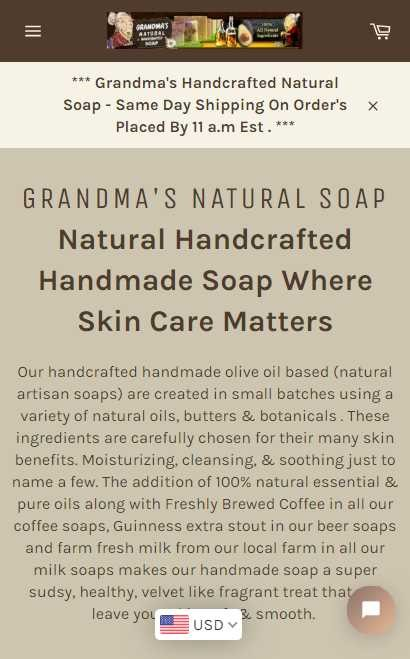
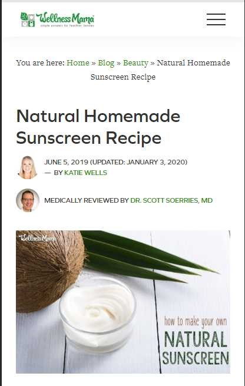
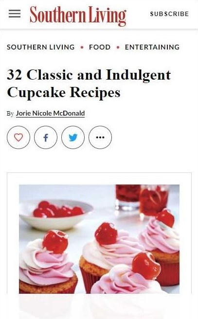

Visual Hierarchy
Grandma's Natural Soap
Natural Handcrafted Soap The visual hierarchy of the subject of his page is apparent in the bold text placed just above the center of the page. Although all the text is the same color and all is a sans-serif type, the sizing and the weight of the text draws the viewer's eyes from the main subject to the name of the company to the shipping information and then to the description of the product. This is a great example of relying on visual contrast to lead the eye in a specific order.
White Space and Clean Design
Wellness Mama
Homemade Sunscreen This page uses white space (literally) to a good advantage. The heading and other text are well spaced, kept at a minimum, and do not distract from the simple lines of the objects in the image. The colors and mostly sans-serif text keep this page design clean and appealing.
Contrast
Southern Living
Indulgent Cupcakes The reds and pinks of the cupcakes make a striking statement about what this page is all about. The cupcakes certainly stand out from the white background so that the viewer instantly knows what the content of the site will be even without reading the headline. The red of the cherries coordinate well with the color of the company name which also stands out on the white background. I believe this is a classic example of contrast.